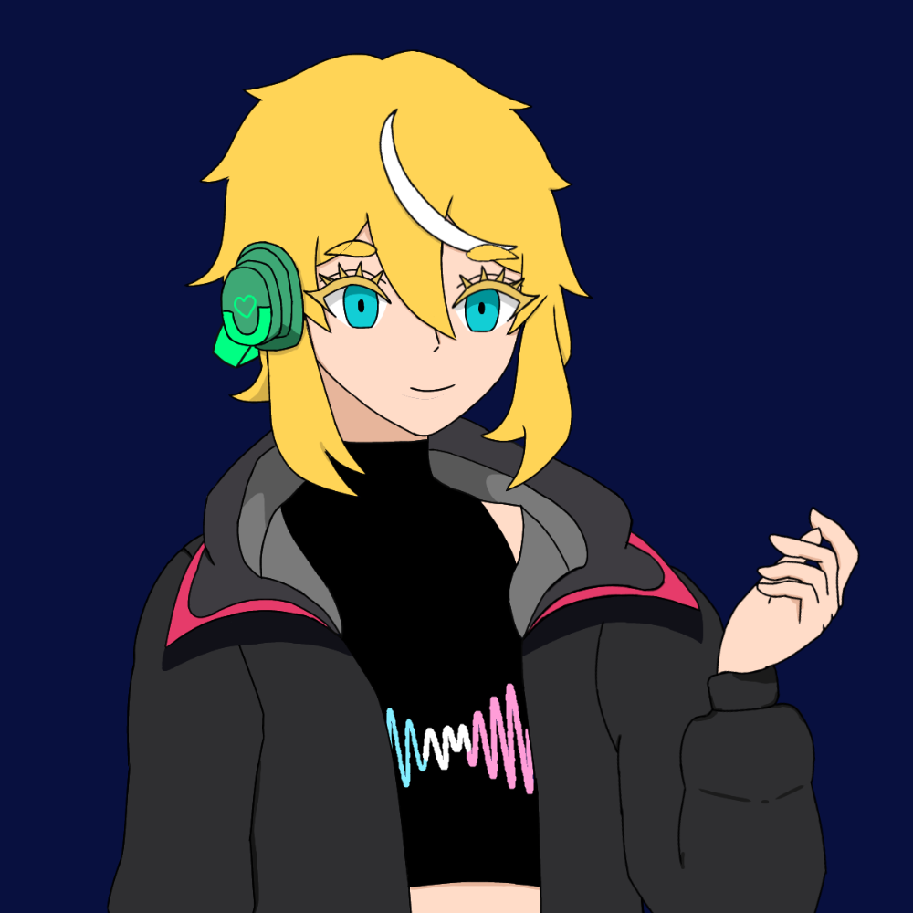

Sidapa
— The Weight of Endings
Sidapa exists in the quiet architecture of finality, a man who reads endings the way others read clocks. At the hospital, he is composed to the point of stillness—movements measured, voice subdued, presence almost ceremonial. To him, life is not chaos but a sequence of inevitable conclusions unfolding in correct order. He perceives lifespans as glowing threads above people’s heads, thinning or fraying with merciless clarity, and this sight has shaped him into someone who never reaches for what time has already marked as lost. Emotion, for Sidapa, is not absence but containment; he feels deeply, but behind sealed doors of restraint built over years of witnessing goodbye after goodbye. Beneath his logic lies a quiet sorrow: the exhaustion of knowing every bond is pre-written as temporary, and the burden of never being allowed to forget that all warmth is scheduled to end.